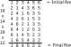
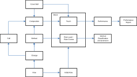
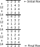
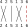
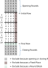

3. Fundamentals of Method Ringing
A.
Stages
1.
A property of several method ringing concepts that indicates the number of bells participating.
Further explanation: Stage applies to the following method ringing concepts: Rows, Changes, Blocks, Methods and Compositions.
The application of Stage to each of these concepts will be covered below in the 'Further explanation' sections of the definitions of these concepts. In addition, click here for an overview of all aspects of Stage.
2.
Stage Name
Names that are given to the different Stages, as follows:
1 = One; 3 = Singles; 5 = Doubles; 7 = Triples; 9 = Caters; 11 = Cinques; 13 = Sextuples; 15 = Septuples; 17 = Octuples.
2 = Two; 4 = Minimus; 6 = Minor; 8 = Major; 10 = Royal; 12 = Maximus; 14 = Fourteen; 16 = Sixteen; 18 = Eighteen.
Odd and even Stages above 18 are named with the written form of the corresponding Stage number, such as Nineteen and Twenty-Two.
B.
Rows
1.
A sequence of numbered bells in which no bell appears more than once.
The bells are numbered consecutively, starting from number one.
Example: 531246 is a Row with a Stage of Minor (or equivalently, a Minor Row).
Further explanation: The Stage of a Row is the number of bells in that Row. Click here for an overview of all aspects of Stage.
Bells are usually numbered in descending order of pitch. Both cardinal numbers (e.g. 1, 2, 3 ...) and ordinal numbers (e.g. 1st, 2nd, 3rd ...) are used. When using cardinals, number 1 is used for the bell with the highest pitch, number 2 for the next highest pitch and so on. When using ordinals, bell number 2 becomes 'the 2nd', bell number 3 becomes 'the 3rd', and so on. However, bell number 1 is usually referred to as 'the treble' rather than 'the 1st', and the bell with the lowest pitch is usually referred to as 'the tenor' rather than the corresponding ordinal.
Bells are numbered relative to how many are in use. For example, if a tower has eight bells but only the six with the lowest pitches are in use, these bells are numbered 1 to 6 instead of 3 to 8.
Rows are normally shown in columns so that the path of individual bells can be visualised by looking down the columns. In order to keep the columns aligned, a fixed font can be used with single characters representing each bell. Conventionally '0' (zero) is used to represent the 10th, and upper (or sometimes lower) case letters (excluding 'I', 'O' and 'X') are used for bells 11 to 33 as follows:
'E' (Eleven); 'T' (Twelve); 'A' (Thirteen); 'B' (Fourteen); 'C' (Fifteen); 'D' (Sixteen); 'F' (Seventeen); 'G' (Eighteen); 'H' (Nineteen); 'J' (Twenty); 'K' (Twenty-one); 'L' (Twenty-two); 'M' (Twenty-three); 'N' (Twenty-four); 'P' (Twenty-five); 'Q' (Twenty-six); 'R' (Twenty-seven); 'S' (Twenty-eight); 'U' (Twenty-nine); 'V' (Thirty); 'W' (Thirty-one); 'Y' (Thirty-two); 'Z' (Thirty-three)
Note that what is defined as a Row in this section is sometimes described as a Change in common ringing parlance, and this usage of Change will be seen in method ringing books and articles. The Framework separately uses Change as the transition between two Rows (see Section 3.C) and this distinction between Row and Change is important in defining a number of other method ringing terms used in the Framework. Row is the preferred term wherever possible.
Technical comment: While this definition of Row refers to a sequence of bells, a Row can comprise, at minimum, one bell.
2.
3.
The position of a bell within a Row.
Example: In the Row 142536, the 2nd bell is in 3rd's Place.
Further explanation: Places are numbered starting with 1 for the first bell in the Row, and increasing sequentially for each next bell in the Row. E.g. the bell that is second in a Row is in Place 2.
Each bell in a Row appears in a different Place to all other bells in that Row, and therefore there are the same number of Places in a Row as there are bells in that Row.
Places are often referred to using ordinal numbers in the possessive form, so Place 2 is often '2nd's Place'. 2nd's Place is a reference to the Place the 2nd bell occupies in Rounds.
The bell in 1st's Place is often said to be leading, and the bell in the last Place of the Row is often said to be lying. E.g. in the Row 214365, the 2nd is leading and the 5th is lying.
C.
Changes
1.
Example: A Change might transpose the bells from the Row 214365 to the Row 241356.
Further explanation: The Stage of a Change is the number of bells on which that Change operates. Click here for an overview of all aspects of Stage.
Since a Change is a transposition of bells, the new Row will comprise the same set of bells as the existing Row.
Note that the same Change applied to different Rows will have the same relative effect. For example, a Change applied to the Row 1342 might produce the Row 1432. The same Change applied to the Row 4123 would produce the Row 4213.
Technical comment: Note that in mathematics, transposition refers to the exchange of two elements. However in ringing, as well as in more general usage, transposition can involve the exchange of more than two elements. For example, ringers talk about transposing coursing orders, which often involves rotating 3 bells.
2.
3.
4.
Further explanation: When ringing heavy bells, Jump Changes are more commonly used to jump from an earlier Place to a later Place, rather than vice versa, due to the physical difficulty of reducing the time between bell strikes.
Technical comment: A Jump Change has a minimum Stage of 3.
D.
Blocks
1.
A sequence of Changes, all with the same Stage, and the Rows produced by applying these Changes, starting from an initial Row.
Example:

Further explanation: The Stage of the Changes in the sequence is the same as the Stage of the initial Row.
Since a Block is generated using Changes, which are transpositions of bells, all Rows in a Block will comprise the same set of bells.
See Section 3.E.1 (Method) below for an explanation of the difference between a Method and a Block.
Dividing lines are often drawn in Blocks, such as those shown over the initial and final Rows in the example above. Dividing lines have no effect on the Rows produced -- they are merely to highlight features of a Block. In this example, the dividing lines highlight that the treble moves in a symmetrical pattern in the Block.
The following diagram shows the relationships between the various components of method ringing. Terms in the diagram that are not defined above are defined elsewhere in the Framework.

Technical comment: The term Block is also used in method ringing to refer to a sequence of Changes without reference to the Rows they can produce. For example, a Composition (see Section G below) may specify a Block of Changes that is repeated at different points in the Composition. While the Framework uses the term Block to refer to a sequence of Changes and the Rows produced by applying these Changes, this does not preclude the term Block from being used to refer just to a sequence of Changes in other contexts.
Note that since a Composition might specify just to ring a Plain Lead or a Plain Course of a single Method, a Plain Lead and a Plain Course can be Touches as well as Blocks.
2.
E.
Methods
1.
Example: The sequence of Changes x16x14x16x12 is the Method that has been given the name Little Bob Minor.
Further explanation: A Method has the Stage of its constituent Changes. Click here for an overview of all aspects of Stage.
Individual Changes and sequences of Changes may be represented using place notation, and place notation is used in the example above as well as elsewhere in the Framework. Place notation is described in Appendix A.
A Method is usually referred to by a name it is given. A Method (including its name) may be recorded in the Central Council's Methods Library when certain requirements have been met. These requirements are described in Section 5.
A Method is distinct from a Block in that a Method only defines Changes, not Rows. A Block, on the other hand, defines both Changes and Rows. A single Method can produce many Blocks. For example, if a Method is rung starting from Rounds, this produces a Block. If the same Method is rung starting from a non-Rounds Row (such as 'Queens'), the resulting Block is different from the one produced by starting from Rounds.
2.
3.
Example: Dixon's Bob Minor.
Further explanation: Dixon's Bob Minor specifies that Rows are produced by successively applying the pair of Changes x16 except (a) if the Treble is leading after an x Change, replace the next 16 Change with a 12 Change, and (b) if the 2nd or 4th is leading after an x Change, replace the next 16 Change with a 14 Change.
Technical comment: A Dynamic Method should be capable of producing a readily-determinable sequence of Changes. A process such as 'Ring the Changes [3.1.3.1.3.{7|5}]^840 where at each choice of 7 or 5, 7 is chosen unless it is impossible to generate a Round Block of the Extent with any choice of following 7 or 5s' is not a valid Dynamic Method, even though this is a well-defined process.
Dynamic Methods are in their infancy, and more precise definitions in this area may be developed for future versions of the Framework if there is sufficient interest by the ringing community.
4.
Further explanation: Plain in this term means that no Calls are used. Calls are covered below in Section 3.F. When the term Lead is used rather than Plain Lead, this means that Calls may or may not be used. However, it is often clear from the surrounding context whether or not Calls are involved, and so in practice Plain Lead will often be shortened to Lead in method ringing texts, with it understood that no Calls are involved.
5.
A Block that is produced by applying a Static Method's sequence of Changes repeatedly, until a Round Block is obtained.
Example: Bastow Little Bob Minimus has the sequence of Changes x12x14. A Plain Course of this Method, starting from Rounds, is therefore:

Further explanation: 'Plain' in this term means that no Calls are used. Calls are covered below in Section 3.F. When the term Course is used rather than Plain Course, this means that Calls may or may not be used.
In the above example, since it takes three applications of the Method's sequence of Changes to produce a Round Block, the Plain Course of Bastow Little Bob Minimus therefore comprises three Plain Leads.
A Plain Course of a Method is a commonly used Block in method ringing. Unless otherwise specified, a Plain Course is started from Rounds. A Plain Course starting from Rounds is often referred to as The Plain Course of a Method, whereas starting from any other Row might be referred to as A Plain Course.
Technical comment: For a Method that is false in the Plain Course (Truth is covered in Section 3.J below) the initial Row might come up in the middle of a Plain Lead. However the Plain Course does not end until the initial Row comes up as the last Row after applying a Static Method's whole sequence of Changes.
While Plain Lead and Plain Course are defined above in terms of a Static Method, these terms may also be applicable to some Dynamic Methods. For example, in Dixon's Bob Minor with Rounds as the initial Row, Rounds comes up again after 64 Changes (with no Calls). This would be considered the Plain Course of Dixon's.
F.
Calls
1.
An instruction to replace Change(s) from a Method with different Change(s), change the current Method to a different one, or affect Cover Bell(s).
Example: The last Change in Little Bob Minor's sequence of Changes is '12'. This is usually replaced with the Change '14' when a 'bob' is called. A 'bob' is a commonly-used Call in method ringing.
Further explanation: A Call is not part of the definition of a Method.
Using Calls to change the current Method to a different one and to affect Cover Bell(s) are covered in Sections 3.G and 3.H respectively, below.
In the application of Calls to replacing Change(s) from a Method with different Change(s), a Call most commonly replaces an individual Change with another, as in the example above. But a Call may also add Changes, remove Changes, or replace a set of Changes with a different set of Changes.
When a Call adds or removes Changes to or from a Method, these Changes are respectively added to or subtracted from the count of Changes for that Method that is used for Performance Reporting purposes. Performance Reporting is covered in Section 6.
Technical comment: When a Call affects the Changes of more than one Method (i.e. in spliced), the Composition (see Section 3.G below) should make clear how the Change count of each Method is affected (if at all) in order to enable accurate Performance Reporting (see Section 6).
2.
Commonly used Calls are recorded in the Central Council Calls Library. This Library also includes Calls that are used to define Variations (see Section 5.D).
Further explanation: The CC Calls Library is in development.
G.
Compositions
1.
An arrangement of Method(s) and Call(s) that produces a sequence of Changes, all with the same Stage.
Further explanation: A Composition has the Stage of the Changes it produces. Click here for an overview of all aspects of Stage.
Larger Compositions may be created by combining other Compositions. For example, seven different Compositions of 720 Minor Changes may be concatenated to produce a Composition of 5040 Minor Changes.
Technical comment: A Composition may use two or more Methods side by side to produce Changes with a higher Stage. For example, a Minor Method and a Doubles Method may be combined side by side to create a Composition that produces Cinques Changes (so the Composition has a Stage of Cinques). Similarly, a Composition may combine a Minor Composition and a Doubles Composition side by side to create a Composition that produces Cinques Changes.
2.
A Composition involving more than one Method is described as Spliced if any changes of Method in the Block produced by the Composition occur at a Row that is not the same as the initial Row of the Block.
Further explanation: If, for example, a Block starts in Rounds, and changes of Method only occur at Rounds during the Block (such as in a Peal of 7 Minor Methods) then the Composition is not Spliced. But if any change of Method occurs during the Block at any Row other than Rounds, then the Composition is Spliced.
H.
Cover Bells
1.
A bell that occupies a Place in a Row that is not one of the Places operated on by the Method(s) of a Composition.
Further explanation: A Cover Bell remains in the same Place from one Row to the next. In the example above, the Doubles Changes of the Composition are deemed to become Minor Changes with a place notation of '6' added to each Change.

In a Row containing one or more Cover Bells, the numbering of the Places may be modified to exclude the Cover Bell(s). In the example above, the bell in 5th's Place (rather that 6th's) may be said to be lying.
A Composition of a given Stage can be used to produce either a Block with the same Stage as the Composition, or a Block with a higher Stage. When the Stage of the Block is higher than the Stage of the Composition, any Places not operated on by the Composition contain Cover Bells.
In the example above, the Doubles Composition is applied to Places 1 to 5 so that 6th's Place contains a Cover Bell. The tenor as Cover Bell is the usual implementation when the Stage of a Block is one higher than the Stage of a Composition. However, the Doubles Composition could be applied to Places 2 to 6 so that 1st's Place contains a Cover Bell.
Since Cover Bells can be generated by using a Composition of a given Stage to produce a Block of a higher Stage, Compositions often do not need to specify the transposition of Cover Bells as these are inferred. However, since the Changes produced by a Composition are all of the same Stage, there are scenarios where a Composition's Changes include the transposition of Cover Bells for some or all Changes.
As example #2, if a Composition uses a Doubles Method initially, applying to Places 1 to 5, and then switches to a Minor Method, applying to Places 1 to 6, then the Composition's Changes are all specified as Minor Changes, with a place notation of '6' added to all Doubles Changes. This Composition therefore has a Stage of Minor. However, even though the Composition has a Stage of Minor, it is still correct to describe the bell in 6th's Place as a Cover Bell when the Doubles Method is being rung, because for these Rows, 6th's Place is not being operated on by the Method of the Composition.
As example #3, a Composition might use a Doubles Method but is designed to produce a Minor Block, and Calls are used that occasionally exchange the Cover Bell in 6th's Place. In this case the Composition's Changes are all specified as Minor Changes (so the Composition's Stage is Minor), with a place notation of '6' added to all Changes where the Cover Bell is not affected. For example, if the Composition's Doubles Method has a '3' Change, this becomes a '36' Change in the Composition. Where the Cover Bell is affected by a Call, what otherwise might have been a '36' Change might instead become a '34' Change.
Technical comment: As discussed above under Compositions (Section 3.G), it is possible for a Composition to use two or more Methods side by side, or to use two or more Compositions side by side. As a further variation, a Composition might also result in an interior Cover Bell. For example, a Composition might be designed to be used with Maximus Rows, using a Doubles Method in Places 1 to 5 and a Minor Method in Places 7 to 12. 6th's Place does not have any Methods operating on it, and therefore 6th's Place contains a Cover Bell. In this case, the Composition would produce Maximus Changes (and therefore have a Stage of Maximus), and each of its Changes would include the place notation '6'.
Every Row in a Block (except for the initial Row) has at least one Method involved in generating it. A Row is not made up solely of Cover Bells.
2.
A Composition is described as Variable Cover if one or more Cover Bells are affected by any of the Composition's Calls.
Further explanation: The Composition described in example #3 in Section 3.H.1 above is a Variable Cover Composition.
Note that a Composition is not considered Variable Cover if a Cover Bell is only affected by a change to a higher Stage Method such that the (former) Cover Bell is now one of the bells on which the Method's Changes operate.
I.
Touches
1.
Further explanation: Note that since a Composition can be a Plain Course of a Method, a Plain Course is therefore also a Touch. The same applies to a Plain Lead.
2.
7.
8.
Example: A Date Touch commemorating the year 2018 would have 2018 Changes and would also be a Quarter Peal.
J.
Truth
1.
The complete set of distinct Rows possible for a given set of bells.
Further explanation: The number of Rows in an Extent for a given set of bells is the factorial of the number of bells in the set. E.g. for 4 bells, the Extent has 4! Rows = 1 * 2 * 3 * 4 = 24 Rows.
When Extent is used on its own, it refers to the unordered set of possible Rows at the Stage in question. However when used with a Method or Composition (e.g. an Extent of Plain Bob Minor), this generally refers to an ordered Extent generated using the Changes of Plain Bob Minor (and any necessary Calls).
Note that usage such as 'Two Extents of Grandsire Doubles' can be ambiguous. This could mean two discrete Extents rung back-to-back, or a Touch of 240 Grandsire Doubles that includes every possible Row exactly twice each. Care should be taken in how this is communicated if the distinction is important.
3.
Technical comment: Note that the Effective Stage of a Block all of whose Rows are the same is zero. An Effective Stage of one is not possible -- once the Effective Stage falls below two, it becomes zero. Ringing a Block that has an Effective Stage of zero (such as all Rounds or all Queens) is not considered method ringing.
4.
A Touch is True if:
- Any Rows in addition to the above are distinct.
Further explanation: If a Touch is a Round Block, the final Row is excluded when determining whether the Touch is True.
When ringing a Touch, it is traditional to ring the initial Row (usually Rounds) several times before starting the Changes, and similarly to ring the final Row several times before standing the bells. These Rows (shown in the diagram below) are excluded when determining Truth.

5.
A Touch is Complete if it contains all possible Rows at the Touch's Effective Stage exactly once, or exactly the same number of times. (Anything else is Incomplete.)
6.
A Touch rung on n bells has Accepted Truth if it is True, or it is comprised of Round Blocks that can be divided into two groups where:
- One group forms a True Touch with an Effective Stage of n and contains at least one Extent at Stage n;
- The other group forms a True Touch with an Effective Stage of n-1 and the same bell rings in nth’s Place in every Row; and
- Only one group may be an Incomplete Touch at its respective Effective Stage.
Further explanation: Accepted Truth applies most commonly to Touches of Doubles and Minor rung on 6 bells. When ringing Doubles, the tenor usually rings in 6th's Place as a Cover Bell.
A Row occuring at a change of Effective Stage (which will be the same as the initial Row since changes of Effective Stage can only occur at the end of a Round Block) is counted as a Row of the following Round Block when determining the Truth of the two groups. The initial Row is counted as part of the first Round Block when determining the Truth of the two groups, and the final Row is excluded.
K.
Performances
1.
3.
A Performance of a Long Length (i.e. 10000 or more Changes) that is the longest Length yet rung in a single Method or the same set of Methods.
Further explanation: A Record Length is also a Peal and a Long Length -- it is a subset of both.
Requirements for CCCBR recognition of Record Lengths are described in Section 7.